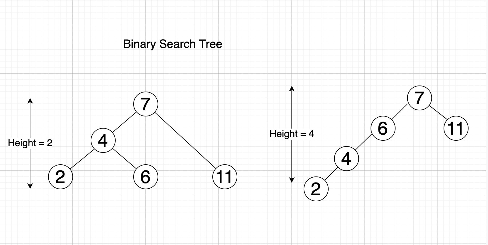
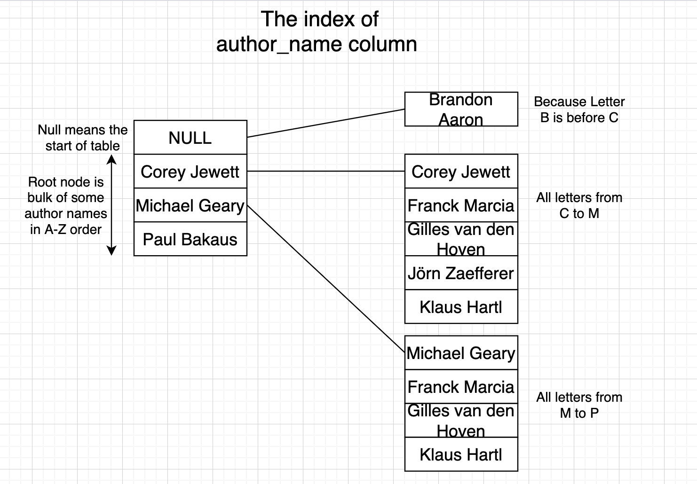

Understanding Database Indexes
Index makes query fast - a simple explanation
Well, most developers or people who work with data know that “Index makes query fast” and they also understand why. But for people who don’t really know about indexing, I would like to write this post to introduce them to it.
Furthermore, I also give some notes from my experience and what I have read about SQL optimization. I hope this will be helpful for those who work in the field of data and computer science.
Tree Data Structure
Tree is a data structure created to improve the efficiency of searching stuff at the cost of low performance of writing/updating.
Imagine we have a list like [2, 4, 7, 6, 11]
We want to find number 6. Normally we’ll search one by one from left to right of the list: 2 -> 4 -> 7 -> 6. We found it, but if the list has thousands of items, it would take a lot of time to do the search operation like that.
Alternatively, we can use a binary search tree data structure to improve the speed. We basically arrange the order of the items in the list with the rule:
- Each item is stored in a node
- Each node (item) may have left and right child with the condition:
left child < item < right child

With that logic, we don’t have to go through all items to find the number we want.
Start from root (top item). If we want number 6, we compare it with the root node. 6 < 7 so we go to the left branch (because smaller items are always stored to the left of the parent item). We get number 4 and because 6 > 4 we go to the right of 4.
The time to search/find an item only depends on the height of the tree, which is the longest path from root node to any leaf node (other items) in the tree. The bigger the height, the slower the speed to find the item we want.

Balanced Binary Tree
A Balanced Binary Tree is simply a Binary search tree as stated above, but the height is balanced. This means that for any node of the tree, the left branch height and the right branch height is the same or almost the same (differ no more than 1).
Example: With the tree in the image below, if we check the node 4:
- Left branch has a height of 1 (contains number 2)
- Right branch has a height of 1 (contains number 6)
If we check the node 7:
- Left branch has a height of 2
- Right branch has a height of 1
- Difference:
2 - 1 = 1
The binary tree below is a balanced binary tree.
This kind of tree is used to optimize the speed of searching, because it optimizes the height of the tree (which is the factor that affects the speed of searching).
B-tree
B-tree is a kind of upgraded Balanced Binary Tree. You can now have multiple items stored in one node (instead of 1 item per node), and each node can have more than 2 children.
As shown in the structure below, we can see each node can have a bulk of data on the left or right. The left bulk contains values which are smaller than the value of the parent node. The right bulk contains values which are bigger than the parent.

The Index in Database
Imagine your table will be stored in database like this:
| ID | author_name |
|---|---|
| 001 | Gilles van den Hoven |
| 002 | Michael Geary |
| 003 | Stefan Petre |
| 004 | Yehuda Katz |
| 005 | Corey Jewett |
| 006 | Klaus Hartl |
| 007 | Franck Marcia |
| 008 | Jörn Zaefferer |
| 009 | Paul Bakaus |
| 010 | Brandon Aaron |
(Authors above are people who contributed to the jQuery library)
We want to search the name of the author fast, so we need to add a new table — an index table — which contains the data of column author_name and organizes that data into a B-tree data structure so the search can be optimized.
The index of author_name can be simply expressed like below:
At the root node of the Tree, we store a list of a few author_name values, for example: [Corey Jewett, Michael Geary, Paul Bakaus], all sorted by A-Z order.
Then for each value, we create a child node which contains other names that satisfy the rule of B-tree: left node contains all values smaller than parent, right node contains bigger values. In this case, smaller means it comes before in the alphabet.

When we search for a name like Yehuda Katz, we start from the root. Y is bigger than P in Paul Bakaus so we look up the right node of Paul Bakaus.
In the child node, we do the same thing until we reach the lowest child node. In this lowest node, we do binary search to search the value. The number of values stored in each node is small, so binary search will do the search really fast.
- We can store data in each node instead of only 1 in a balanced tree, therefore reducing the height of the tree and improving the speed of the search.
- Values in each node are sorted in a particular order, therefore we can look up faster. The number of values in each node is small enough so binary search can be quick too.
Example: Index Performance
I will demonstrate the difference between no-index and indexed query performance. The data I use is 1.5 million records of sales, and I use PostgreSQL database to store those records.
Without Index
Before adding an index to the column Item Type, I try the query below, and it returns 125,022 records with a speed of 2.244 seconds.
With Index
Now, we will add an index to the Item Type column:
CREATE INDEX item_type_index ON sale_records ("Item Type");That command will run for a while to create a new table which is an index table containing the data of column Item Type with the principle of B-tree as we mentioned earlier.
As we can see, the speed is much better now. The index helps us identify the word Beverages faster, hence we can search for it better.
Rules for SQL Optimization
Thanks to understanding the underlying principle of indexes, we can now note down some rules for better queries in the future.
The notes below will be updated regularly.
1. Avoid LIKE with Leading Wildcards
Avoid LIKE expressions with leading wildcards (e.g., '%TERM').
Because the index uses the first letter and sorts by A-Z order, we should avoid LIKE expressions without the first letter specified. The index table will be useless in this case.
2. Multi-Column Index Rules
If we create an index for multiple columns, then the WHERE condition applied for only one of those columns will not use the index.
For example, if we make an index for user_id and company, then searching for user_id = 1000 alone will not use the index. The index is only valid for the combination of user_id and company. We have to search for user_id = 1000 AND company = 'GOOGLE' to use the index.
3. Case-Insensitive Indexes
If we want to search with Case-Insensitive matching (meaning CUONG and Cuong return the same result), then we should create an index with case-insensitivity:
CREATE INDEX user_index ON users (UPPER(first_name));This creates an index with uppercase of first_name column values. Then we execute the query:
SELECT * FROM users WHERE UPPER(first_name) = 'CUONG';4. Function-Based Index Considerations
If you want to query data like “how many days from the latest day each user bought a product”, you might write something like TRUNC(DAYS_BETWEEN(SYSDATE, buy_date)).
However, this value cannot be indexed because it changes daily. (Index can be updated with INSERT, UPDATE, DELETE commands, but can’t automatically update daily or when executing SELECT commands).
Solution: Index buy_date instead. If we want to query all users that have 30 days from now to their latest purchase, we calculate that date (that_date = today - 30 days), then query with condition that_date = buy_date.
5. DateTime Range Conditions
When writing conditions for datetime ranges, explicitly declare the start and end of the time range.
Instead of:
WHERE date_time < '2020-10-10'Write:
WHERE date_time > '2020-10-09' AND date_time < '2020-10-10'Further Reading
- Use The Index, Luke — An excellent resource for understanding SQL indexing in depth.